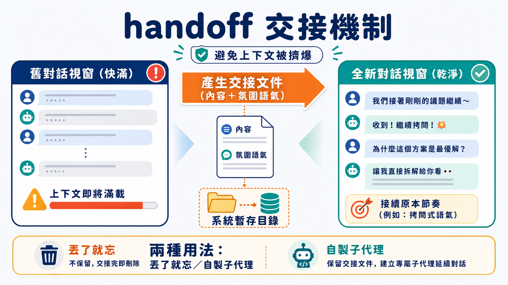
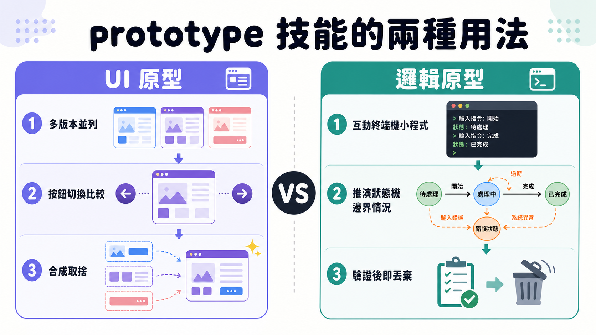

一個工程師正在跟 Claude Code 進行一場長時間的「拷問式」討論，釐清一個模糊需求背後真正該長成什麼樣子。對話已經吃掉六萬個 token。這時他忽然發現，有個問題只能靠實際跑一段程式碼才能回答清楚——但如果直接在這個對話裡開始寫程式、跑測試、修 bug，剩下的四萬 token 很快就會被消耗殆盡，而那個原本進行到一半的拷問，連同它累積的所有語境，就這樣被犧牲掉了。
這是使用 AI 編碼助手一段時間後，幾乎所有人都會撞上的牆：對話視窗是有限的資源，但工作內容往往需要在「想清楚」跟「動手做」之間來回切換好幾次。過去唯一的解法，是硬著頭皮在同一個視窗裡把兩件事擠在一起做，結果就是兩邊都做得不上不下——語境視窗一邊被思考過程占用，一邊又被程式碼與錯誤訊息占用，誰也沒有真正乾淨的空間。
handoff：把「意圖」也一起打包

這星期釋出的第一個新技能，解法簡單到有點反常識：與其想辦法擠出更多空間，不如乾脆開一個全新的對話視窗，再把舊視窗的重點濃縮後搬過去。
/handoff 做的事情，說穿了就是把目前對話寫成一份交接文件，存到系統暫存目錄裡的固定路徑，再由使用者把那個路徑丟給一個全新開啟的 agent。聽起來像是很基本的「摘要」功能，但真正決定它好不好用的，其實是幾個容易被忽略的細節。
第一個細節是，技能說明裡特別強調「先讀取檔案再寫入」——這不是什麼寫作講究，而是純粹的工具限制：Claude Code 在寫入一個從沒讀過的檔案時會直接報錯，所以這行指令等於是預先繞開一個已知的系統摩擦點。
第二個、也是真正關鍵的細節，是交接文件不能只搬運「內容」，還得搬運「氛圍」與「意圖」。如果原本的對話是一場拷問式的深度追問，交接文件就該讓下一個 agent 知道：接手之後，你也該繼續用拷問的方式往下逼問，而不是換一個溫和的執行模式把整個對話的節奏打亂。這跟單純做逐字摘要的差異在於，摘要記錄的是「說了什麼」，而交接文件記錄的是「正在做什麼、用什麼態度做」。少了後者，新開的視窗即使讀到同樣的資訊，行為模式也可能整個跑掉。
另外還有一條規則值得留意：不要重複貼上已經存在於其他文件裡的內容，而是用路徑或連結去引用它們。這其實是在對抗一種很容易發生的浪費——每次交接都把整個上下文原封不動複製一份，交接文件會越滾越大，失去它原本該有的輕巧。
實務上這衍生出兩種用法。一種是「丟了就忘」：在拷問過程中突然發現一個 bug，直接交接給新 agent 去修，自己不需要再管；另一種被稱為「自製子代理」——同樣是離開主對話去處理一段程式碼，但做完之後再交接回原本的拷問或規劃階段，繼續把剛剛學到的東西帶回去。差別在於，一般的子代理是被主流程綁死、資源和自主性都受限的角色；而透過 handoff 開出去的這個「子代理」，擁有完整獨立的語境視窗，甚至可以再往下衍生自己的子代理。某種程度上，這已經不是子代理，而是一個被使用者手動調度、暫時借用的對等夥伴。
prototype：把「說不清楚」的東西做出來看

第二個技能鎖定的是一個更古老的難題——有些設計決策，光靠討論永遠談不攏，只有把東西真的做出來，眼睛看到、手摸到，才知道對不對。
多數人一聽到「原型」，直覺會想到介面。這個聯想沒有錯，/prototype 確實在使用者介面設計上特別好用：它會一次生成好幾個風格迥異的版本，而且是實際嵌入專案的路徑結構裡運作，頁面下方會浮出一顆按鈕，左右切換就能在不同版本之間比較，喜歡這版的配色、那版的排版，兩邊各取所需再合成一個新版本，其餘的直接捨棄。這種「先分岔、再收斂」的流程，某種程度上比一開始就要求 AI 直接產出一個「正確答案」更貼近真實設計工作的樣子。
但介面只是這個技能的其中一種用法，不是全部。它同樣適用在業務邏輯上——尤其是那種帶狀態、會隨時間或使用者操作而變化的邏輯，比如資料庫裡一個實體要如何隨著一連串動作演變。這種情況下，可以做的是一個很小的、能在終端機裡互動的程式，直接把狀態機推過各種難以在紙上憑空推演的情境。換句話說，原型不是拿來展示成品用的，而是拿來「研究」用的——用完即丟，重點從來不是保留這份程式碼，而是靠它把原本模糊的設計決策逼出一個具體答案。
這裡有個值得多想一層的地方：為什麼做前端這件事，對全自動運作的 AI agent 來說特別吃力？答案不是模型能力不夠，而是 AI 沒有真正的「眼睛」——它可以寫出語法正確、邏輯無誤的介面程式碼，卻無法自己判斷這個介面「看起來對不對」，因為那牽涉到品味與風格這種高度依賴人類主觀感受的東西。這也是為什麼原型技能被特別強調要有人類坐在迴圈裡即時給回饋——不是因為流程設計上偏好人工介入，而是因為視覺判斷這一關，目前確實沒有繞過去的路。等到人類挑出滿意的版本，才輪到另一個能夠長時間自主運作的 agent 接手真正落地實作。
一個容易被忽略的修法：提示詞裡也有音量
除了兩個全新技能，這次更新還藏了一個規模很小、但邏輯很有意思的修正。長期被使用的「搭配文件拷問」技能，最近被發現有個毛病——它有時會太急著動手實作，明明使用者只是想討論，它卻已經開始寫程式。
追查下去，問題出在提示詞的結構上。原本用來輔助說明的補充資訊，和真正定義這個技能該做什麼的核心指令，寫在同一段文字裡、沒有任何區隔。結果模型讀到後面的補充內容，反而把它當成比前面的正式指令更重要的訊息去執行。這其實跟音量控制是同一回事——一段提示詞裡，不同部分會彼此競爭模型的注意力與影響力，寫得靠後、寫得詳細的段落，不見得代表它該被優先聽從，但模型不一定分得出這層差異。
解法是把這兩塊內容用 XML 標籤明確切開，一塊標成核心任務，一塊標成補充資訊，讓模型知道後面這段不是正式指令，重要性可以往下調一級。這個做法在 Anthropic 自家模型上似乎特別吃得開，官方文件裡也提過類似建議。目前沒有做嚴謹的評測去量化效果，只能說，自從加上這個區隔之後，原本那種「太急著動手」的抱怨幾乎消失了——這是一個仍停留在「感覺對了」層次的觀察，而不是有數據背書的結論，但至少方向是對的。
排隊中的兩個技能：程式碼審查與寫作
還有兩件事正在進行中，沒有成熟到可以直接推出，但值得先聊聊思路。
一個是通用型的程式碼審查技能，之所以拖了很久沒做，是因為要寫出一套適用所有專案的審查邏輯異常困難。目前想到的解法，是把審查拆成兩條互相獨立的檢查軸線：一條看這段修改是否符合這個專案自己的程式碼風格與規範，另一條看它是否真正忠實地實現了原本的需求或規格。只盯著風格，會漏掉「做錯方向」這種更嚴重的問題；只盯著規格，又會放過一堆風格上的地雷。於是規劃中的做法是同時派出兩個平行的子代理，各自負責一條軸線。風格這條線又特別麻煩，因為每個專案的規範都不一樣，可能還得先做一個專門的技能，用來從既有程式碼裡反推出這個專案實際遵循的風格慣例，才有機會把審查做到位。
另一個進行中的方向跟寫作有關，規劃分成三段：先寫「片段」——零散的想法、觀察、素材，類似作家長年累積的筆記與日記，這些片段後來往往會近乎原封不動地被寫進正式作品裡；接著從片段裡挑出方向、寫「節拍」——在許多可能的敘事走向裡，先列出三個選項，再決定往哪個方向推進；最後是一輪回頭檢查的修整，確認整體讀起來不會太像機器生成，結構也站得住腳。這套流程還在早期嘗試階段，連提出的人自己都說還沒準備好要推廣，只是先讓有興趣的人自己試試看。
尾聲
這幾個技能放在一起看，其實有一條共同的線索：與其把 AI 助手當成一個什麼都要塞進同一個對話裡搞定的萬能體，不如把工作拆成一段一段，各自用最適合的方式去做——該交接的時候交接，該做原型的時候先別急著寫正式程式碼，該分軸線檢查的時候就別想用一套邏輯打天下。技能生態本身也在往這個方向長，連同即將上線的文件網站與電子報，某種程度上也是同一件事的延伸——把原本擠在一個人腦子裡的工作流程，拆解成一塊塊可以被檢視、被複製、也可以被別人拿去改造的模組。